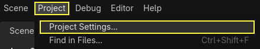
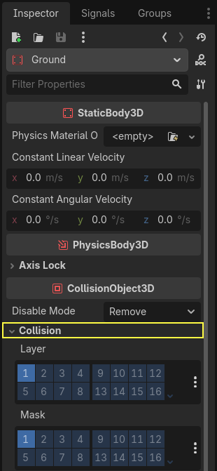
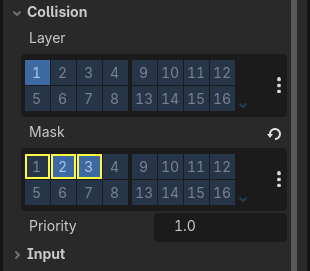
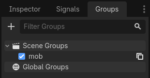
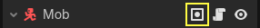

Nhảy và dẫm bẹp quái vật
Trong phần này, chúng ta sẽ thêm khả năng nhảy và dẫm bẹp quái vật. Trong bài tiếp theo, chúng ta sẽ khiến người chơi chết khi bị quái vật va phải trên mặt đất.
Đầu tiên, chúng ta phải thay đổi một vài cài đặt liên quan đến tương tác vật lý. Hãy bước vào thế giới của physics layer.
Kiểm soát tương tác vật lý
Các physics body có hai thuộc tính bổ trợ cho nhau: layer và mask. Layer xác định đối tượng nằm trên (các) physics layer nào.
Mask kiểm soát những layer mà một body sẽ lắng nghe và phát hiện. Điều này ảnh hưởng đến việc phát hiện va chạm. Khi bạn muốn hai body tương tác với nhau, ít nhất một trong hai cần có mask tương ứng với body còn lại.
Nếu điều này khó hiểu, đừng lo, chúng ta sẽ xem ba ví dụ ngay sau đây.
Điểm quan trọng là bạn có thể dùng layer và mask để lọc các tương tác vật lý, kiểm soát hiệu năng, và loại bỏ nhu cầu viết thêm điều kiện trong code.
Theo mặc định, tất cả physics body và area đều được đặt cả layer lẫn mask là 1. Điều này có nghĩa là tất cả chúng đều va chạm với nhau.
Physics layer được biểu diễn bằng số, nhưng chúng ta có thể đặt tên cho chúng để dễ theo dõi.
Đặt tên cho các layer
Hãy đặt tên cho các physics layer. Vào Project -> Project Settings.

Ở menu bên trái, đi xuống Layer Names -> 3D Physics. Bạn có thể thấy danh sách các layer, mỗi layer có một ô nhập ở bên phải. Bạn có thể đặt tên cho chúng ở đó. Lần lượt đặt tên ba layer đầu tiên là player, enemies và world.

Giờ chúng ta có thể gán chúng cho các node vật lý.
Gán layer và mask
Trong scene Main, chọn node Ground. Trong Inspector, mở rộng mục Collision. Ở đó, bạn có thể thấy các layer và mask của node dưới dạng một lưới nút bấm.

Mặt đất là một phần của thế giới, nên chúng ta muốn nó thuộc layer thứ ba. Nhấp vào nút đang sáng để tắt Layer thứ nhất và bật layer thứ ba. Sau đó, tắt Mask bằng cách nhấp vào nó.

Như đã đề cập, thuộc tính Mask cho phép một node lắng nghe tương tác với các đối tượng vật lý khác, nhưng chúng ta không cần nó để có va chạm. Ground không cần lắng nghe gì cả; nó chỉ ở đó để ngăn các sinh vật rơi xuống.
Lưu ý rằng bạn có thể nhấp vào nút "..." ở bên phải các thuộc tính để xem danh sách các ô đánh dấu có tên.

Tiếp theo là Player và Mob. Mở player.tscn bằng cách nhấp đúp vào file trong dock FileSystem.
Chọn node Player và đặt Collision -> Mask của nó thành cả "enemies" và "world". Bạn có thể để nguyên thuộc tính Layer mặc định, vì layer đầu tiên chính là layer "player".

Sau đó, mở scene Mob bằng cách nhấp đúp vào mob.tscn và chọn node Mob.
Đặt Collision -> Layer của nó thành "enemies" và bỏ chọn Collision -> Mask, để mask trống.

Các cài đặt này có nghĩa là quái vật sẽ đi xuyên qua nhau. Nếu bạn muốn quái vật va chạm và trượt vào nhau, hãy bật mask "enemies".
Ghi chú
Các mob không cần mask layer "world" vì chúng chỉ di chuyển trên mặt phẳng XZ. Theo thiết kế, chúng ta không áp dụng trọng lực cho chúng.
Nhảy
Bản thân cơ chế nhảy chỉ cần hai dòng code. Mở script của Player. Chúng ta cần một giá trị để điều khiển lực nhảy và cập nhật _physics_process() để viết code cho cú nhảy.
Sau dòng định nghĩa fall_acceleration, ở đầu script, hãy thêm jump_impulse.
#...
# Vertical impulse applied to the character upon jumping in meters per second.
@export var jump_impulse = 20
// Don't forget to rebuild the project so the editor knows about the new export variable.
// ...
// Vertical impulse applied to the character upon jumping in meters per second.
[Export]
public int JumpImpulse { get; set; } = 20;
Bên trong _physics_process(), thêm đoạn code sau trước khối code move_and_slide().
func _physics_process(delta):
#...
# Jumping.
if is_on_floor() and Input.is_action_just_pressed("jump"):
target_velocity.y = jump_impulse
#...
public override void _PhysicsProcess(double delta)
{
// ...
// Jumping.
if (IsOnFloor() && Input.IsActionJustPressed("jump"))
{
_targetVelocity.Y = JumpImpulse;
}
// ...
}
Đó là tất cả những gì bạn cần để nhảy!
Phương thức is_on_floor() là một công cụ của lớp CharacterBody3D. Nó trả về true nếu body đã va chạm với sàn trong frame này. Đó là lý do chúng ta áp dụng trọng lực cho Player: để nhân vật va chạm với sàn thay vì lơ lửng phía trên như các quái vật.
Nếu nhân vật đang ở trên sàn và người chơi nhấn "jump", chúng ta lập tức cho nhân vật một tốc độ thẳng đứng lớn. Trong game, bạn thật sự muốn việc điều khiển phản hồi nhanh, và việc tăng tốc tức thời như thế này, dù không thực tế, lại mang đến cảm giác rất tuyệt.
Hãy để ý rằng trục Y có chiều dương hướng lên. Điều này khác với 2D, nơi trục Y có chiều dương hướng xuống.
Đè bẹp quái vật
Tiếp theo, hãy thêm cơ chế dẫm bẹp. Chúng ta sẽ khiến nhân vật nảy lên khỏi quái vật và đồng thời tiêu diệt chúng.
Chúng ta cần phát hiện va chạm với quái vật và phân biệt chúng với va chạm với sàn. Để làm vậy, chúng ta có thể dùng tính năng gắn thẻ group của Godot.
Mở lại scene mob.tscn và chọn node Mob. Vào dock Groups ở bên phải để xem danh sách các group, nơi cho phép bạn gán thẻ cho node. Nhấp vào nút + để mở hộp thoại Create new Group.

Nhập "mob" vào ô Name và nhấp nút Ok.

Group "mob" giờ được hiển thị trong mục Scene Groups.

Một biểu tượng xuất hiện trong dock Scene để cho biết node thuộc ít nhất một group.

Giờ chúng ta có thể dùng group trong code để phân biệt va chạm với quái vật và va chạm với sàn.
Viết code cho cơ chế dẫm bẹp
Quay lại script của Player để viết code cho việc dẫm bẹp và nảy lên.
Ở đầu script, chúng ta cần thêm một thuộc tính nữa, bounce_impulse. Khi dẫm bẹp kẻ địch, chúng ta không nhất thiết muốn nhân vật bay cao như khi nhảy.
# Vertical impulse applied to the character upon bouncing over a mob in
# meters per second.
@export var bounce_impulse = 16
// Don't forget to rebuild the project so the editor knows about the new export variable.
// Vertical impulse applied to the character upon bouncing over a mob in meters per second.
[Export]
public int BounceImpulse { get; set; } = 16;
Sau đó, sau khối code Jumping mà chúng ta đã thêm ở trên trong _physics_process(), hãy thêm vòng lặp sau. Với move_and_slide(), Godot đôi khi di chuyển body nhiều lần liên tiếp để làm mượt chuyển động của nhân vật. Vì vậy chúng ta phải lặp qua tất cả các va chạm có thể đã xảy ra.
Trong mỗi lần lặp, chúng ta kiểm tra xem có đáp xuống một mob hay không. Nếu có, chúng ta tiêu diệt nó và nảy lên.
Với code này, nếu không có va chạm nào xảy ra trong một frame, vòng lặp sẽ không chạy.
func _physics_process(delta):
#...
# Iterate through all collisions that occurred this frame
for index in range(get_slide_collision_count()):
# We get one of the collisions with the player
var collision = get_slide_collision(index)
# If there are duplicate collisions with a mob in a single frame
# the mob will be deleted after the first collision, and a second call to
# get_collider will return null, leading to a null pointer when calling
# collision.get_collider().is_in_group("mob").
# This block of code prevents processing duplicate collisions.
if collision.get_collider() == null:
continue
# If the collider is with a mob
if collision.get_collider().is_in_group("mob"):
var mob = collision.get_collider()
# we check that we are hitting it from above.
if Vector3.UP.dot(collision.get_normal()) > 0.1:
# If so, we squash it and bounce.
mob.squash()
target_velocity.y = bounce_impulse
# Prevent further duplicate calls.
break
public override void _PhysicsProcess(double delta)
{
// ...
// Iterate through all collisions that occurred this frame.
for (int index = 0; index < GetSlideCollisionCount(); index++)
{
// We get one of the collisions with the player.
KinematicCollision3D collision = GetSlideCollision(index);
// If the collision is with a mob.
// With C# we leverage typing and pattern-matching
// instead of checking for the group we created.
if (collision.GetCollider() is Mob mob)
{
// We check that we are hitting it from above.
if (Vector3.Up.Dot(collision.GetNormal()) > 0.1f)
{
// If so, we squash it and bounce.
mob.Squash();
_targetVelocity.Y = BounceImpulse;
// Prevent further duplicate calls.
break;
}
}
}
}
Có khá nhiều hàm mới. Dưới đây là thêm một số thông tin về chúng.
Các hàm get_slide_collision_count() và get_slide_collision() đều thuộc lớp CharacterBody3D và liên quan đến move_and_slide().
get_slide_collision() trả về một đối tượng KinematicCollision3D chứa thông tin về vị trí và cách thức va chạm xảy ra. Ví dụ, chúng ta dùng thuộc tính get_collider của nó để kiểm tra xem có va chạm với một "mob" hay không bằng cách gọi is_in_group() trên nó: collision.get_collider().is_in_group("mob").
Ghi chú
Phương thức is_in_group() có sẵn trên mọi Node.
Để kiểm tra rằng chúng ta đang đáp xuống quái vật, chúng ta dùng tích vô hướng của vector: Vector3.UP.dot(collision.get_normal()) > 0.1. Pháp tuyến va chạm là một vector 3D vuông góc với mặt phẳng nơi va chạm xảy ra. Tích vô hướng cho phép chúng ta so sánh nó với hướng lên trên.
Với tích vô hướng, khi kết quả lớn hơn 0, hai vector tạo với nhau một góc nhỏ hơn 90 độ. Giá trị lớn hơn 0.1 cho biết chúng ta đang ở gần như phía trên quái vật.
Sau khi xử lý logic dẫm bẹp và nảy lên, chúng ta kết thúc vòng lặp sớm bằng câu lệnh break để tránh gọi mob.squash() lặp lại thêm lần nữa, điều có thể gây ra các lỗi ngoài ý muốn như tính điểm nhiều lần cho một lần tiêu diệt.
Chúng ta đang gọi một hàm chưa được định nghĩa, mob.squash(), nên phải thêm nó vào lớp Mob.
Mở script mob.gd bằng cách nhấp đúp vào nó trong dock FileSystem. Ở đầu script, chúng ta muốn định nghĩa một signal mới tên là squashed. Và ở cuối, bạn có thể thêm hàm squash, nơi chúng ta phát signal và hủy mob.
# Emitted when the player jumped on the mob.
signal squashed
# ...
func squash():
squashed.emit()
queue_free()
// Don't forget to rebuild the project so the editor knows about the new signal.
// Emitted when the player jumped on the mob.
[Signal]
public delegate void SquashedEventHandler();
// ...
public void Squash()
{
EmitSignal(SignalName.Squashed);
QueueFree();
}
Ghi chú
Khi dùng C#, Godot sẽ tự động tạo các event phù hợp cho tất cả Signal kết thúc bằng EventHandler, xem Signal trong C#.
Chúng ta sẽ dùng signal này để cộng điểm trong bài tiếp theo.
Như vậy, bạn đã có thể tiêu diệt quái vật bằng cách nhảy lên chúng. Bạn có thể nhấn F5 để chơi thử và đặt main.tscn làm scene chính của dự án.
Tuy nhiên, người chơi vẫn chưa thể chết. Chúng ta sẽ làm điều đó trong phần tiếp theo.